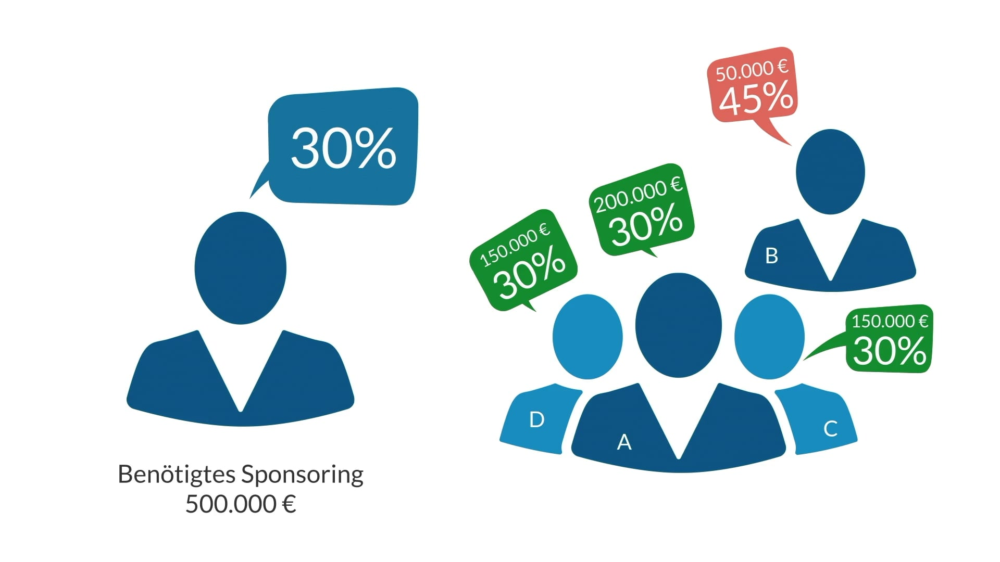
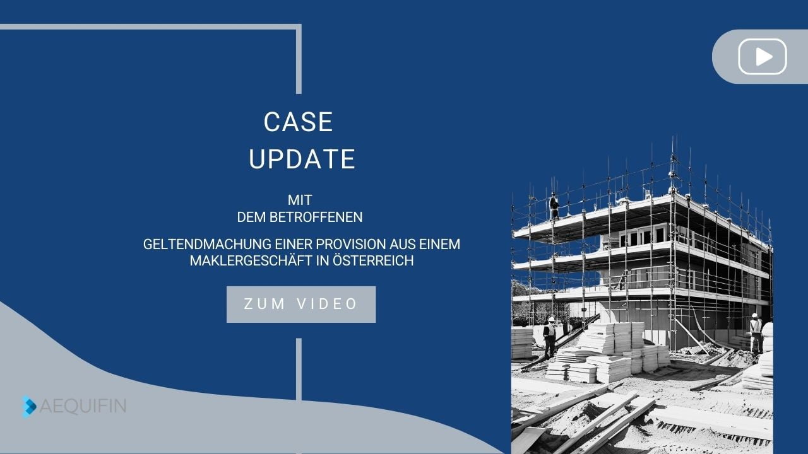
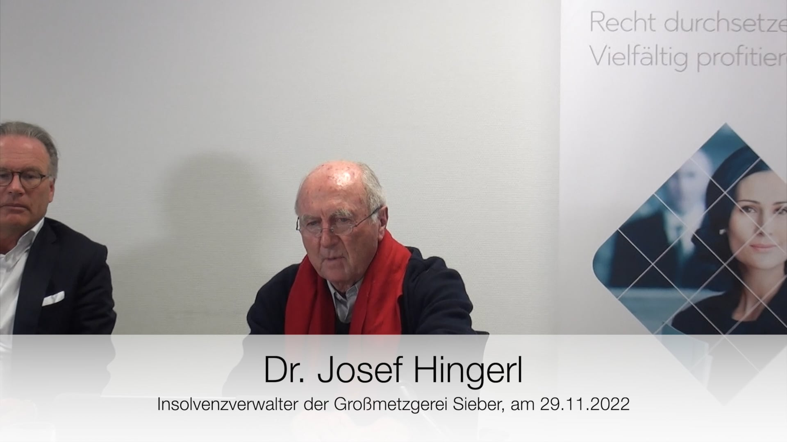

Video Tutorials
Ihr Video-Hub für alles rund um AEQUIFIN — erfahren Sie, wie die Plattform funktioniert, entdecken Sie finanzierte Fälle, hören Sie von unserer Geschäftsführung und lesen Sie Erfahrungsberichte unserer Kunden.
Lernvideos
Erfahren Sie, wie AEQUIFIN funktioniert — von den Grundlagen der Prozessfinanzierung bis zum einzigartigen Quotenbalancing.

Willkommen bei AEQUIFIN
AEQUIFIN ist ein Online-Marktplatz fur Prozessfinanzierung. Uber die AEQUIFIN-Plattform wird ein direkter und transparenter Zugang zum Prozessfinanzierungsmarkt geschaffen.

AEQUIFIN-Quotenbalancing
Das Besondere an der AEQUIFIN-Plattform ist das AEQUIFIN-Quotenbalancing – ein einzigartiges Bieterverfahren, das die Finanzierung eines Falles mit mehreren beteiligten Sponsoren ermöglicht.

Aequifin Plattform: Ein Sponsoring abgeben
In diesem Tutorial sehen Sie Schritt fur Schritt, wie Sie auf der AEQUIFIN-Plattform ein Sponsoring abgeben. Von der Auswahl des Falls bis zur finalen Bestatigung wird der komplette Ablauf kompakt erklart.

Aequifin Plattform: Einen neuen Fall anlegen
Dieses Video zeigt, wie ein neuer Fall strukturiert auf der AEQUIFIN-Plattform angelegt wird. Sie erfahren, welche Angaben und Unterlagen fur eine erfolgreiche Fallanlage erforderlich sind.

Aequifin Plattform: Dokument im Datenraum hochladen
Hier wird erklart, wie Sie Dokumente sicher in den Datenraum hochladen und korrekt zuordnen. So stellen Sie sicher, dass alle fallrelevanten Unterlagen transparent und vollstandig bereitstehen.
AEQUIFIN Fall Videos
Sehen Sie, wie Rechtsanwälte reale Fälle auf der Plattform präsentieren und wie die Finanzierung strukturiert wird.

Anspruch auf Vergütung für Aktientransaktion
Case Video auf der AEQUIFIN Plattform.
Fallzusammenfassung
Mit dieser Klage geht es um eine von der Klägerin geltend gemachte Finders Fee für die von ihr nachgewiesene Investitionsmöglichkeit, die der Beklagte nutzte, indem er in mehreren Tranchen Aktien an einem Unternehmen erwarb.
- Prozessbudget: 51.585 €
- Klageziel: 301.224 €
- Sponsoring: ab 500 €

Haftung des Freistaates Bayern für rechtswidrige Verbraucherwarnung
Case-Update mit Dr. Josef Hingerl.
Fallzusammenfassung
Der Kläger ist Insolvenzverwalter über das Vermögen der Firma Sieber Gesellschaft für Wurst- und Schinkenspezialitäten.
- Prozessbudget: 373.918 €
- Klageziel: 12.000.000 €
- Sponsoring: ab 100 €

Haftung des Freistaates Bayern für rechtswidrige Verbraucherwarnung
Statement von Insolvenzverwalter Dr. Hingerl nach der Verhandlung beim Bundesgerichtshof.
Fallzusammenfassung
Der Kläger ist Insolvenzverwalter über das Vermögen der Firma Sieber Gesellschaft für Wurst- und Schinkenspezialitäten.
- Prozessbudget: 373.918 €
- Klageziel: 12.000.000 €
- Sponsoring: ab 100 €

Haftung des Freistaates Bayern für rechtswidrige Verbraucherwarnung
Interview mit Prof. Meisterernst zum BGH-Urteil.
Fallzusammenfassung
Der Kläger ist Insolvenzverwalter über das Vermögen der Firma Sieber Gesellschaft für Wurst- und Schinkenspezialitäten.
- Prozessbudget: 373.918 €
- Klageziel: 12.000.000 €
- Sponsoring: ab 100 €

Haftung des Freistaates Bayern für rechtswidrige Verbraucherwarnung
Interview mit Rechtsanwältin Lisa Eberlein zur anstehenden OLG-Verhandlung.
Fallzusammenfassung
Der Kläger ist Insolvenzverwalter über das Vermögen der Firma Sieber Gesellschaft für Wurst- und Schinkenspezialitäten.
- Prozessbudget: 373.918 €
- Klageziel: 12.000.000 €
- Sponsoring: ab 100 €

Der Fall Wirecard auf der AEQUIFIN Plattform
Wirecard-Anmeldung auf der AEQUIFIN Plattform.
Fallzusammenfassung
Über 20 Millionen € an Ansprüchen gegenüber der Wirecard AG wurden erfolgreich über AEQUIFIN zur Durchsetzung finanziert.
Derzeit können keine weiteren Ansprüche zur Finanzierung angemeldet werden. Die AEQUIFIN-Plattform bedankt sich für Ihr Vertrauen.
- Klageziel: Schadensersatzansprüche bündeln
Über AEQUIFIN
Video-Statements unserer Gesellschafter, des CEOs sowie Updates zu neuen Plattform-Features und Technologie.

Die AEQUIFIN Story
In diesem Video erfahren Sie, wie AEQUIFIN entstanden ist und welche Vision hinter der Plattform steht. Es zeigt, wie Betroffene, Rechtsanwälte und Sponsoren erstmals transparent auf einem gemeinsamen Marktplatz zusammengeführt werden.

Ludwig Zoller
CEO, Experte für Prozessfinanzierung
- Gründer von AEQUIFIN zur Demokratisierung der Prozessfinanzierung
- Rechtsanwalt mit umfassender Erfahrung in der Prozessfinanzierung
- Visionär hinter dem AEQUIFIN-Quotenbalancing-Verfahren
Dr. Thomas Müller teilt seine Vision für AEQUIFIN und wie die Plattform die Lücke zwischen Betroffenen, Anwälten und Sponsoren schließt, um fairen Zugang zur Justiz zu schaffen.
Willkommen bei AEQUIFIN
AEQUIFIN ist ein Online-Marktplatz fur Prozessfinanzierung. Uber die AEQUIFIN-Plattform wird ein direkter und transparenter Zugang zum Prozessfinanzierungsmarkt geschaffen.
Ludwig Zoller
CEO, Experte für Prozessfinanzierung
- Senior Partner bei EY — 13 Jahre
- Managing Partner bei Mazars — über 10 Jahre
- Rechtsanwalt & Steuerberater
- Aktiver Investor in der Prozessfinanzierung
Burkhard Lohmann teilt seine Perspektive, warum er sich für eine Investition in AEQUIFIN entschieden hat und was den Prozessfinanzierungsmarkt so attraktiv macht.

Einzigartiger Zugang zur Welt der Prozessfinanzierung
Auf einer Informationsveranstaltung der Kanzlei Lutz Abel zum Thema „Prozessfinanzierung“ stellte Ludwig Zoller das einzigartige Modell der AEQUIFIN-Plattform vor: Betroffene, Sponsoren und Rechtsanwälte erhalten über die Plattform einen Zugang zur Welt der Prozessfinanzierung, der bislang nur wenigen Insidern offen stand. Sein Vortrag ist jetzt im Video verfügbar - für alle, die die Veranstaltung verpasst haben oder den Vortrag noch einmal anhören möchten.

Frank Martin Binder
CTO bei AEQUIFIN
- SEO-Experte seit 7 Jahren
- Erstellung & Management mehrerer SEO/SEA-Kampagnen
- Studium der Informatik
Iheb präsentiert die neuesten Plattform-Features und technischen Verbesserungen des Jahres 2026, darunter verbessertes Fallmanagement und Sponsor-Dashboards.

Die Neue AEQUIFIN Plattform 2026
Dieses Video gibt einen kompakten Überblick über die neue AEQUIFIN Plattform 2026. Vorgestellt werden die wichtigsten Verbesserungen für Nutzerführung, Transparenz und Zusammenarbeit zwischen allen Beteiligten.
Frank Martin Binder
CTO bei AEQUIFIN
- Ökonom und Autor
- 20 Jahre Erfahrung im Bank- und Vermögensverwaltungsbereich
- Immobilien- und Erneuerbare-Energien-Projektentwicklung
Stefan erzählt die Geschichte des AEQUIFIN-Teams — die Werte, die sie verbinden, die Kultur, die sie aufgebaut haben, und was die Mission antreibt, Justiz zugänglich zu machen.
Erfahrungen mit AEQUIFIN
Hören Sie direkt von unseren Kunden — Betroffene, Rechtsanwälte und Sponsoren teilen ihre Erfahrungen mit AEQUIFIN.

Gabriel Quareschi — Geltendmachung einer Provision aus einem Maklergeschäft in Österreich
Der Betroffene hat mit der Gegenseite einen Makler- und Vermittlungsauftrag unterzeichnet und im Anschluss dazu ein Senioren- und Pflegeheim einschließlich Immobilie vermittelt. Nach Abschluss des Kaufvertrages weigert sich die Gegenseite, die vereinbarte Provision in Höhe von 160.650 € zu bezahlen.
Gabriel Quareschi
Der Betroffene hat mit der Gegenseite einen Makler- und Vermittlungsauftrag unterzeichnet und im Anschluss dazu ein Senioren- und Pflegeheim einschließlich Immobilie vermittelt. Nach Abschluss des Kaufvertrages weigert sich die Gegenseite, die vereinbarte Provision in Höhe von 160.650 € zu bezahlen.

Dr. Josef Hingerl — Haftung des Freistaates Bayern für rechtswidrige Verbraucherwarnung
Der Kläger ist Insolvenzverwalter über das Vermögen der Firma Sieber Gesellschaft für Wurst- und Schinkenspezialitäten. Vor sämtlichen Produkten der Firma Sieber wurde am 27.05.2016 in rechtswidriger Weise gewarnt, nachdem bei einem Produkt im Handel ein Listerienbefall festgestellt worden war.
Dr. Josef Hingerl
„Ohne AEQUIFIN hätte die Gegenpartei es geschafft, uns unter Druck zu setzen. Die Insolvenzmasse hatte schlichtweg nicht die Mittel, einen Rechtsstreit zu führen. Dank an alle Sponsoren, die das ermöglicht haben — die zurückgewonnenen Vermögenswerte flossen direkt an die Gläubiger zurück, die auf eine Lösung gewartet hatten."
Mit einem Klick auf Play wird das Video von Vimeo geladen. Informationen zur Datenverarbeitung finden Sie in unserer Datenschutzerklärung.
Kontakt & Standort
Kontakt aufnehmen
Ob Prozessfinanzierung, Fragen zu unseren Leistungen oder Informationen zur Sponsor-Registrierung — unser Team unterstützt Sie gerne.
Fälle entdecken & registrieren
Aktuelle Fälle und Rechtsprojekte auf AEQUIFIN ansehen oder sich als Sponsor registrieren.
AEQUIFIN wird gefördert durch